Apostila - Eletricidade Básica - José Antonio Sanches Lapaz
1 - Introdução
Tudo a nossa volta está relacionado ao átomo, e a eletrônica, bem como a eletrotécnica, trabalham com a movimentação dos elétrons que por sua vez fazem parte do átomo, bem como os prótons e os nêutrons. Através dos elementos presentes na natureza e suas características podemos montar vários dispositivos eletrônicos e eletrotécnicos, estes, que vem a facilitar o funcionamento de equipamentos e dispositivos que nos auxiliam no controle dos elétrons. Só que estes elétrons estão desorganizados, ou seja, não possuem um caminho definido que possam seguir. Com isso queremos dizer que os elétrons, na natureza, seguem sentidos aleatórios e individuais. Na eletrônica e eletrotécnica trabalhamos estes sentidos, fazendo com que cada elétron fique alinhado no mesmo sentido, isto será estudado mais a frente na teoria de força e campo elétrico, tensão e corrente elétrica.
1.1 - O Átomo
Vamos, agora, estudar a estrutura do átomo, pegaremos, para isso, como base para o nosso estudo o átomo mais simples da natureza, o hidrogênio. Como podemos observar na figura abaixo, o átomo de hidrogênio possui somente um elétron, um próton e um neutro.
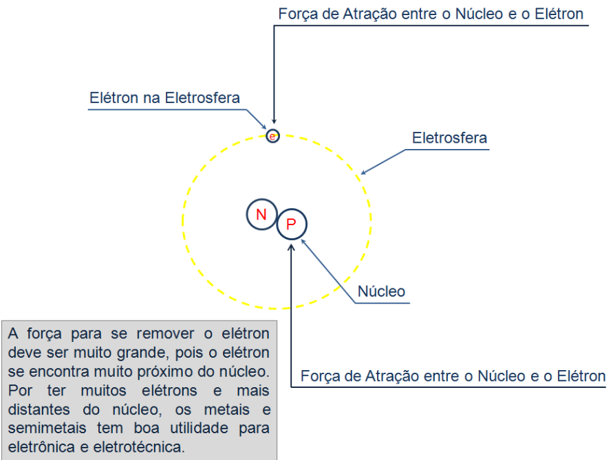No modelo apresentado na anterior (Modelo atômico de Rutherford-Bohr, modelo de esferas), observamos que existem duas cargas colocadas ao centro e estas cargas estão estáveis no centro do átomo, havendo a necessidade de uma força muito grande para separá-las, e um elétron que circula ao redor destas cargas centrais. A carga do próton e do neutro são iguais, em massa, já o elétron tem massa correspondente a cerca de "1/1480" em relação a um próton, sendo assim cerca de 1840 elétrons caberiam dentro de um próton, para que tenhamos a ideia do tamanho da diferença entre os prótons e os elétrons, quando falamos de massa. Por ser mais leve o elétron tem melhor mobilidade e rapidez, e por estar situado na eletrosfera se torna mais fácil seu desligamento do núcleo, em relação ao próton que é mais pesado e está preso ao núcleo do átomo.
Em termos gerais podemos pensar que o próton tem a massa de um elefante, enquanto que o elétron tem a massa de um rato. No estudo da eletricidade o átomo de hidrogênio não nos valeria de muito pois possui um só elétron na eletrosfera, e a força que teríamos que imprimir para o deslocamento deste elétron de sua posição na eletrosfera teria de ser muito grande devido o mesmo estar muito próximo do núcleo.
""
Apostila - Eletricidade Básica - José Antonio Sanches Lapaz
Então por que devemos estudar o seu comportamento?
Em que isso nos auxiliará em nossos estudos?
Estudando a estrutura simples do átomo de hidrogênio podemos observar como todos os átomos dos diferentes grupos da tabela periódica se comportam em seu interior, lembrando que quanto maior o átomo maior a quantidade de prótons, nêutrons, e elétrons em seu núcleo e eletrosfera. Assim, quanto mais distante do núcleo o elétron terá mais facilidade para se desprender do átomo e ficar livre em uma zona de condução que fará ele circular livre pelo corpo do material formado pelo conglomerado de vários átomos do mesmo material ou de materiais diferentes. Por isso, muitas vezes denominamos esses elétrons que têm a facilidade de se desprender do núcleo do átomo e passar da camada de valência para a de condução, de elétrons livres, pois eles se tornam livres para seguir o caminho que forem direcionados.
1.2 – Ligações químicas
A estrutura básica de uma substância ou composto químico é formada por moléculas, e estas por sua vez são formadas pelas ligações químicas. Já as ligações químicas são divididas em três tipos: metálicas, iônicas e covalentes.
A) Ligações Iônicas: São formadas pela atração de íons de cargas opostas, neste tipo de ligação um átomo cede um ou mais elétrons e o outro recebe um ou mais elétrons, a figura abaixo exemplifica o que foi explicado.
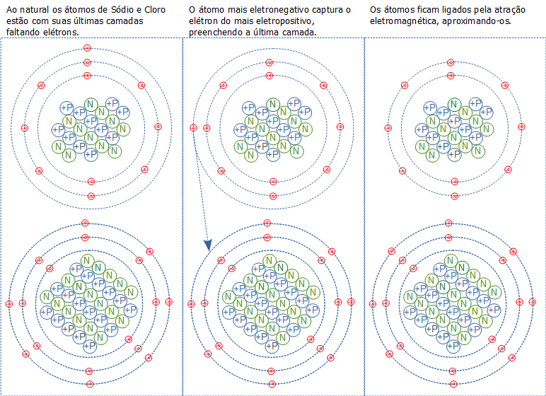B) Ligações Covalentes: São formadas pelo compartilhamento de elétrons, neste tipo de ligação dois ou mais átomos compartilham os elétrons que estão situados em sua última camada da eletrosfera entre si. Isto torna o átomo estável eletricamente, a figura abaixo exemplifica o que foi explicado.
""
Apostila - Eletricidade Básica - José Antonio Sanches Lapaz
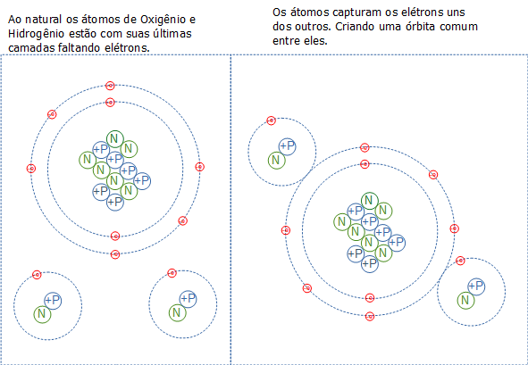C) Ligações Metálicas: As ligações metálicas, como podemos observa pelo nome, ocorrem entre metais, ou seja, átomos de alta eletropositividade. A união destes átomos cria um material cristalino de formas variadas. Em alguns cristais o elétron se encontra preso, não tendo liberdade de movimento, já em outros cristais os elétrons encontram uma facilidade de movimentar-se pelo corpo formado pela estrutura do cristal. Esta mobilidade dos elétrons que estão passeando pelo corpo metálico é o que mostra a diferença entre um corpo que conduz eletricidade e um corpo isolante que não dispõem de uma mobilidade de elétrons como os metais, não que um corpo isolante não possa conduzir eletricidade, porém, para que esse conduza a força aplicada ao mesmo deve ser grande o suficiente para que os elétrons que estão fortemente presos a estrutura do corpo ganhem velocidade e se movimentem. Já segundo a teoria da nuvem eletrônica certos átomos do metal têm desprendido de suas últimas camadas alguns elétrons e esses elétrons ficam vagando entre os átomos do material cristalino do metal, que por sua vez funcionam como um certo tipo de cola elétrica que mantém os cátions do metal, formados pelo desprendimento desses elétrons, unidos a esses elétrons que ficam vagando pelo material cristalino, a figura abaixo exemplifica o que foi explicado.
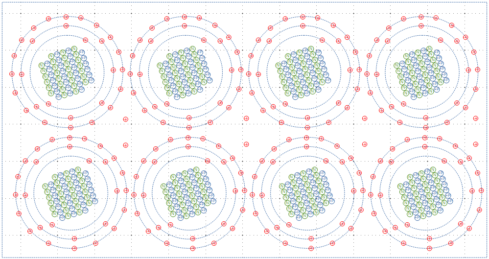Topo
""
Apostila - Eletricidade Básica - José Antonio Sanches Lapaz
1.3 - Carga Elétrica
Um elétron possui uma carga elétrica que tem seu valor em módulo de aproximadamente 1,6x10-19 coulomb's e sua representação é dada pela letra “e”. Devemos nos lembrar que a carga do próton e do elétron tem o mesmo valor em módulo, sendo adotado o valor negativo para o elétron e o positivo para o próton.
No elétron as linhas entram segundo convenção:
E sua carga é: 1e- = -1,602176487x10-19 C.
No próton as linhas saem segundo convenção:
E sua carga é: 1p+ = |1e-| = 1,602176487x10-19 C.
Já o valor de um coulomb em elétrons é:
1C = 6,241509647x1018 e-
Como sabemos as cargas de mesmo sinal se repelem devido as linhas de campo elétrico terem o mesmo sentido de direção, como mostrado nas figuras abaixo:
Então para duas cargas carregadas negativamente, por ambas terem linha de campo entrando, e devido a este fato as cargas negativas se repelem, pois não existe conexão entre suas linhas de campo elétrico. Isto é similar a um ímã, se colocarmos dois ímãs aproximando os pólos sul dos mesmos, notamos que há repulsão devido as linhas de campo magnético entrarem no polo sul dos ímãs.
Então para duas cargas carregadas positivamente, por ambas terem linha de campo saindo, e devido a este fato as cargas positivas se repelem, pois não existe conexão entre suas linhas de campo elétrico. Isto é similar a um ímã, se colocarmos dois ímãs aproximando os pólos norte dos mesmos, notamos que há repulsão devido as linhas de campo magnético saírem no polo norte dos ímãs.
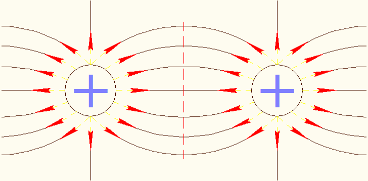
""
Apostila - Eletricidade Básica - José Antonio Sanches Lapaz
Já para cargas de sinais contrários, notamos que as linhas de campo saem das carga positivas e entram nas cargas negativas, devido a isto existe a atração entre as cargas como podemos observar na figura abaixo. Então para duas cargas carregadas positiva e negativamente, por ambas terem linha de campo distintas, cargas se atraem, pois existe conexão entre suas linhas de campo elétrico. Isto é similar a um ímã, se colocarmos dois ímãs aproximando os polos norte e sul dos mesmos, notamos que há atração devido as linhas de campo magnético saírem no polo norte de um ímã e entrarem no polo sul do outro ímã.
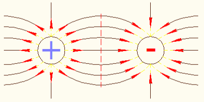1.3.1 - Exercícios resolvidos:
1) Calcule a quantidade de elétrons a ser inserido a um corpo neutro para que o mesmo, depois possua uma carga de -24μC.
2) Calcule a carga elétrica de 1500 elétrons?
Topo
""
Apostila - Eletricidade Básica - José Antonio Sanches Lapaz
1.4 - Força Elétrica
Tanto a força entre cargas negativas e positivas que vem a ser de atração, bem como a força entre as cargas positivas e a força entre cargas negativas que vem a ser de repulsão são calculadas em módulo, isto quer dizer que não se leva em conta se a carga e negativa ou positiva para o seu cáculo, sendo seu valor sempre positivo, ou seja, em módulo. Há também a distância que interfere na força, isto quer dizer, quanto maior a distância menor a força entre as cargas e quanto menor a distância maior a força entre as cargas. Por experimentos comprovamos que a força cai com o quadrado da distância, ou seja, fica menor com o quadrado da distância.
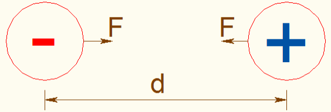
Além disso existe a constante de ajuste, ou seja, a constante de proporcionalidade do meio.
K = constante de proporcionalidade do meio, no vácuo, igual a:
Assim temos:
Q1 e Q2 = intensidade de carga elétrica dada em Coulomb (C);
d = distância entre as cargas dada em metro (m);
F = intensidade de força elétrica dada em Newtons (N);
1.4.1 - Exercícios resolvidos:
1) Duas cargas postas a uma distância de 1m uma da outra e com um valor de intensidade de Q1 = 64μC e Q2 = 50μC. Pede-se o valor da intensidade de força elétrica do sistema.
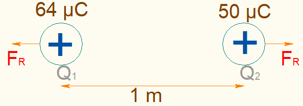
""
Apostila - Eletricidade Básica - José Antonio Sanches Lapaz
2) Duas cargas postas a uma distância de 100mm uma da outra e com um valor de intensidade de Q1 = 64μC e Q2 = 50μC. Pede-se o valor da intensidade de força elétrica do sistema.
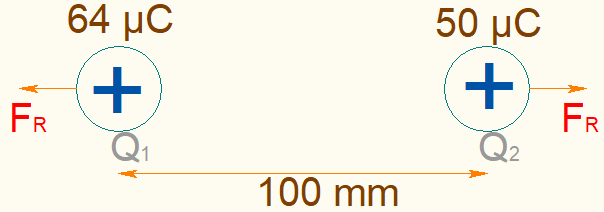3) Duas cargas postas a uma distância de 10mm uma da outra e com um valor de intensidade de Q1 = 64μC e Q2 = 50μC. Pede-se o valor da intensidade de força elétrica do sistema.
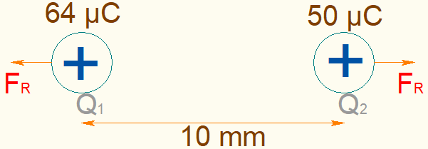
""
Apostila - Eletricidade Básica - José Antonio Sanches Lapaz
4) Duas cargas postas a uma distância de 1mm uma da outra e com um valor de intensidade de Q1 = 64μC e Q2 = 50μC. Pede-se o valor da intensidade de força elétrica do sistema.
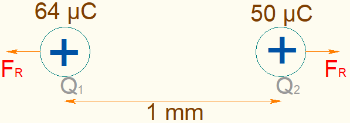 Topo1.5 - Campo Elétrico
Uma vez definida a carga elétrica e a força elétrica nos falta, somente, a definição do campo elétrico e esta definição é de fácil entendimento porque o campo elétrico é o espaço onde estas cargas e esta força estão interagindo.
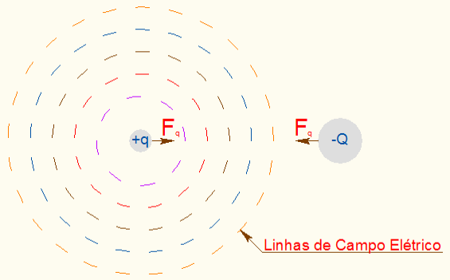
Para definição de campo elétrico colocamos uma carga “q” ao centro, ou seja, isolamos uma carga “q” como sendo uma carga de teste e a força que aparece entre a carga “q” e uma carga “Q” é a força de teste, e dividindo esta força pela carga “q” encontramos o campo que interage neste sistema.
Assim temos:
""
Apostila - Eletricidade Básica - José Antonio Sanches Lapaz
1.6 - Tensão Elétrica
O potencial elétrico, tensão elétrica ou diferença de potencial, em termos físicos é a força aplicada a uma carga quando esta se encontra sujeita a um campo elétrico. A diferença de potencial é expressa em Volts (V) e é dada pela expressão abaixo: A diferença de potencial pode ser positiva ou negativa, dependendo somente da carga elétrica envolvida, devido a isto a diferença de potencial é uma grandeza escalar, ou seja, tem uma intensidade definida. Assim, o caminho percorrido pela carga Q do seu ponto inicial a qualquer ponto de maior potencial V1, V2 , V3, V4 e V5 é a tensão elétrica ou diferença de potencial.
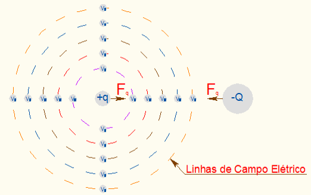1.6.1 - Exercícios resolvidos:
1) Calcule o valor da diferença de potencial de uma carga, de -250 µC, posicionada a uma distância de 500 mm de um campo elétrico aplicado a um fio de cobre.
""
Apostila - Eletricidade Básica - José Antonio Sanches Lapaz
1.7 - Corrente Elétrica
Já corrente elétrica está associada por sua vez ao movimento de cargas elétricas durante um determinado período de tempo.
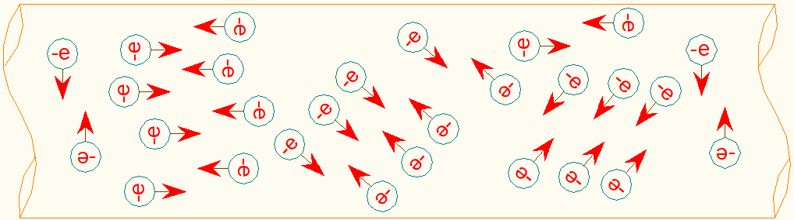Assim se aplicarmos uma diferença de potencial em um condutor elétrico, essa diferença de potencial organizará os elétrons ou as cargas elétricas envolvidas no condutor e isso nos dará um fluxo de elétrons no sistema perpendicular ao sentido do campo elétrico.
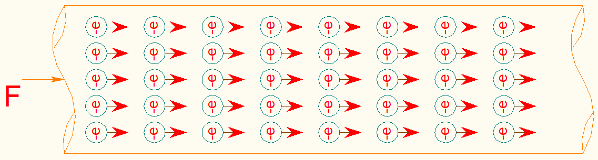A corrente elétrica ou intensidade de corrente I elétrica é encontrada medindo-se o volume ou quantidade total de carga elétrica Q que atravessa a secção transversal de um condutor por um tempo t. A expressão abaixo é a de cálculo da corrente elétrica:
1.7.1 - Exercícios resolvidos:
1) Qual a corrente elétrica que surge em um fio, para uma carga de 250µC medida em um período de tempo de aproximadamente 50 s?
2) Qual a corrente elétrica que surge, em um condutor metálico, quando aplicamos uma carga de 980 μC durante período de tempo de aproximadamente 1000 s? E se o tempo fosse de 200 ms?
""
Apostila - Eletricidade Básica - José Antonio Sanches Lapaz
Topo1.8 - Potência Elétrica
A potência elétrica é o trabalho realizado a uma velocidade que se mantém constante de uma carga elétrica, com relação a um fluxo de cargas durante um determinado período de tempo medido ou predefinido. Segundo a expressão abaixo podemos observar o cálculo da potência elétrica: Podemos observar o sistema de tensão, corrente e potência elétrica como se fosse um sistema mecânico hidráulico, como apresentado na figura abaixo.
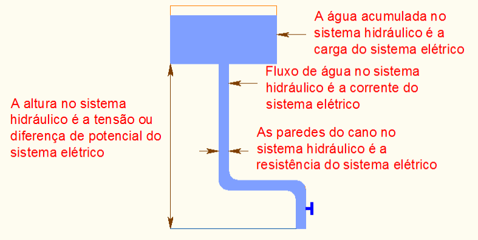
""
Apostila - Eletricidade Básica - José Antonio Sanches Lapaz
1) Determine a potência elétrica de um sistema com tensão de -4,5 MV e corrente de -50µA. Se ao invés da tensão e da corrente, tivessemo a carga de -250 µC e um perído de medição de tempó de 50 segundos em um fio com comprimento de 500 mm, qual seria a corrente?
Topo1.9 - Energia Elétrica
A energia elétrica é o quanto de esforço foi gasto para se realizar o trabalho em um determinado período de tempo. Segundo a expressão abaixo podemos observar o cálculo da energia elétrica: Mas a energia elétrica que consumimos na residência, comércio e indústria e apresentada em kWxh, ou seja, uma outra maneira de se observar a energia em Joule. Assim temos:
Topo
""
Apostila - Eletricidade Básica - José Antonio Sanches Lapaz
2 - Exercícios
Átomo
| 1) Em que nos auxilia o estudo dos átomos na eletrônica? |
| 2) Qual a importância dos elétrons para a eletrônica? |
| 3) Por que o próton não pode ser usado como elemento de controle eletrônico? |
| 4) Quais a cargas do elétron, do próton e do nêutron? A massa dos três elementos são iguais? Se não diga a diferença entre cada um. |
| 5) Quais os tipos de ligações químicas? |
| 6) O que diz a teoria da nuvem eletrônica? |
Carga Elétrica
| 1) A carga elétrica de um elétron vale 1,6x10-19 C. Qual a quantidade de elétrons presentes em um coulomb? |
| 2) A carga elétrica do elétron e do próton tem o mesmo valor? Explique a sua resposta. |
""
Apostila - Eletricidade Básica - José Antonio Sanches Lapaz
| 3) Calcule a quantidade de elétrons a ser retirada de um corpo neutro para que o mesmo, depois possua uma carga de 154 μC. |
| 4) Calcule a carga elétrica de 10.000 elétrons? |
Força Elétrica
| 1) Duas cargas postas a uma distância de 50mm uma da outra e com um valor de intensidade de Q1 = 150 μC e Q2 = -200 μC. Defina o valor da intensidade de força elétrica do sistema, e se a força presente entre as cargas é de atração ou repulsão. |
| 2) Duas cargas postas a uma distância de 300mm uma da outra e com um valor de intensidade de Q1 = 100 μC e Q2 = 50 nC. Defina o valor da intensidade de força elétrica do sistema, e se a força presente entre as cargas é de atração ou repulsão. |
| 3) Duas cargas postas a uma distância de 400mm uma da outra e com um valor de intensidade de Q1 = 160 nC e Q2 = 70 pC. Defina o valor da intensidade de força elétrica do sistema, e se a força presente entre as cargas é de atração ou repulsão. |
Campo Elétrico
| 1) O que é campo elétrico? |
| 2) Duas cargas postas a uma distância de 50mm uma da outra e com um valor de intensidade de Q1 = 150 μC e Q2 = -200 μC. Defina o valor do campo elétrico que a carga Q1 impõe sobre a carga Q2. |
""
Apostila - Eletricidade Básica - José Antonio Sanches Lapaz
| 3) Duas cargas postas a uma distância de 300mm uma da outra e com um valor de intensidade de Q1 = 200 nC e Q2 = 600 μC. Defina o valor do campo elétrico que a carga Q1 impõe sobre a carga Q2. |
Tensão Elétrica
| 1) Qual a definição de potencial elétrico? Explique. |
| 2) Calcule o valor da diferença de potencial de uma carga, de -50 μC, posicionada a uma distância de 50 mm de um campo elétrico aplicado a um fio de cobre. |
Corrente Elétrica
| 1) Qual a definição de intensidade de corrente? Explique. |
| 2) Qual a corrente elétrica que surge no problema anterior para um período de tempo de aproximadamente 20 s? |
Potência Elétrica
| 1) Qual a definição de potência elétrica? Explique. |
| 2) Determine a potência elétrica do sistema apresentado nas questões anteriores. |